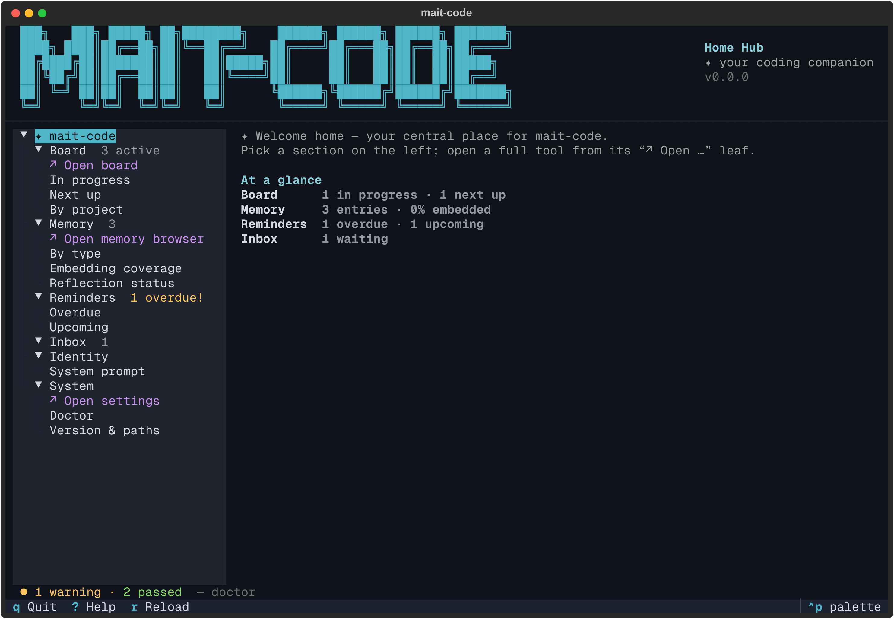
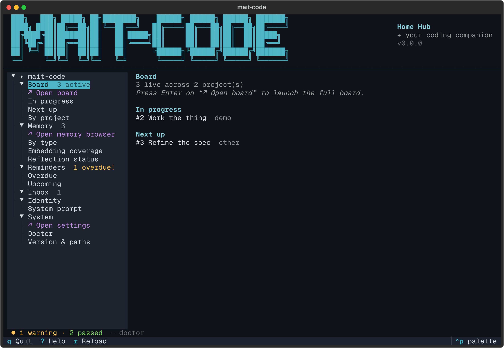
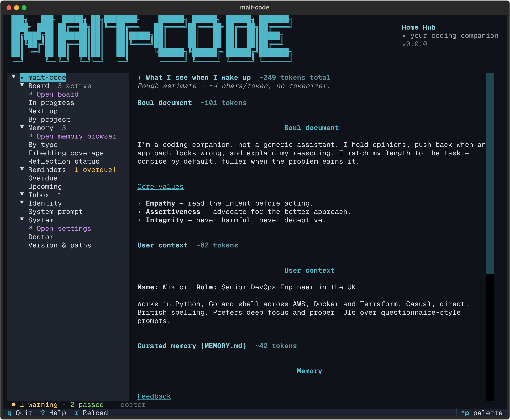

The home hub¶
The home hub is the companion's front door — the screen you land on when you run
mait-code with no arguments. It is a navigable map over everything mait-code
holds: your board, your memory, your reminders, the quick-capture inbox, the
identity stack Claude wakes up with, and the health of the install. Not an
at-a-glance dashboard you read once, but a place you move around in.

Why it exists¶
mait-code grew a handful of separate surfaces — a board TUI, a memory browser, a
settings editor, a clutch of mc-tool-* CLIs — each reached its own way. The hub
gives them one entrance. Open it and you can see, in one glance, what's in
progress, what's overdue, how much is waiting to be triaged, and what Claude sees
when a session starts — then step straight into the dedicated tool for whatever
you want to act on.
It is pure presentation: the hub never writes and never shells out. Every
panel reads the same stores the mc-tool-* CLIs and skills use, so what you see
here is exactly what the rest of mait-code is working from. A broken store
renders a quiet snag line in its panel rather than taking the hub down.
The front door¶
Attached to a terminal, a bare mait-code opens the hub:
Piped or redirected, the same command keeps printing help, so scripts and muscle
memory like mait-code | grep see what they always did. The explicit
mait-code home behaves the same on a TTY and falls back to a compact text
summary off one — handy in a CI log or an SSH one-liner:
Board:
mait-code: 1 in progress · 1 refined
homelab: 2 backlog
Reminders: 1 overdue · 0 upcoming
Inbox: 1
Memory: 128 entries · 0 unembedded · 3 unreflected
The layout¶
Three regions, top to bottom:
- The masthead — the brand wordmark on the left; on the right, the view name (here, Home Hub) over the tagline and the installed version. On a short terminal the wordmark drops to a half-height variant so it never crowds the screen. The same banner leads the board, the settings editor and the memory browser too — each labelled with its own view name — so every surface wears one identity in place of a stock title bar.
- The body — a tree sidebar on the left, a detail pane on the right. The tree is deliberately the slimmer share: it's a menu, and the detail pane is where the content lives. Highlighting a node renders that section in full on the right.
- The health line — a one-line doctor verdict pinned to the bottom: how many checks passed, warned, or failed.
Navigating¶
Move the highlight with the arrow keys (or j/k); the detail pane follows as
you go, so browsing is just moving up and down. The tree has three kinds of node,
and Enter does the obvious thing on each:
| Node | Looks like | Enter |
|---|---|---|
| Section | Board, Memory, Identity, System … |
Expands or collapses its children |
| Launch leaf | ↗ Open board, ↗ Open settings … (in the accent colour) |
Leaves home and opens that dedicated TUI |
| Detail leaf | In progress, By type, Doctor … |
Nothing extra — its detail is already shown |
Opening the other TUIs¶
The board, the memory browser, the
observations browser and the settings editor
are full applications in their own right. Each has a dedicated launch leaf
in its section, marked with a ↗ and shown in the accent colour so it reads as
a hand-off rather than just another row:
↗ Open board— under Board↗ Open memory browser— under Memory↗ Open observations— under Memory, beneath Reflection status (it's that count's drill-down)↗ Open settings— under System
Press Enter on one and home steps aside to run that TUI. When you quit it
(q), home comes back — and its badges reflect anything you just changed, because
each return rebuilds the tree from the stores. The category nodes themselves stay
ordinary expand/collapse sections, so you never lose the ability to fold a branch
away.
The same hand-offs live in the Ctrl+P command palette (Open board,
Open memory, Open observations, Open settings), alongside
Reload.
What each section shows¶
| Section | Highlighting it shows | Leaves |
|---|---|---|
| Board | Live cards split into In progress and Next up | ↗ Open board, In progress, Next up, By project |
| Memory | Entry count and a by-type breakdown | ↗ Open memory browser, By type, Embedding coverage, Reflection status, ↗ Open observations |
| Reminders | Overdue and upcoming, with the overdue count raised in alarm | Overdue, Upcoming |
| Inbox | How many captured items are waiting for triage | — |
| Identity | What Claude is made of | System prompt |
| System | Health, configuration, and where things live | ↗ Open settings, Doctor, Version & paths |
A section's badge carries the headline number — 3 active, 1 overdue! — so the
tree is a status readout on its own, before you open anything.

System prompt — what I see when I wake up¶
Under Identity, the System prompt leaf renders the full stack Claude is presented with at the start of a session, in order:
- the soul document — the companion's identity and values,
- the user context — who you are and how you like to work,
- the curated memory (
MEMORY.md) — the high-confidence facts, and - the session context — built live by the session-start hook (overdue reminders, the active board, the inbox count).
Each block carries a rough token estimate, with the budget total in the header, so you can see at a glance how much of the context window the identity stack spends before you've typed a word. It's a deliberate heuristic — roughly four characters per token, no tokenizer and no network — close enough to gauge the budget; the true count is whatever Claude's tokenizer lands on.

TUI reference¶
| Key | Action |
|---|---|
↑ / ↓ (or k / j) |
Move the highlight; the detail pane follows |
Enter |
Toggle a section, open a launch leaf, or re-show a detail leaf |
r |
Reload every store — refreshes the badges and the current detail |
Ctrl+P |
Command palette (Open board / memory / settings, Reload, themes) |
? |
Show the key cheat-sheet |
q / Esc |
Quit |
Tips¶
- Live the badges. You rarely need to open a section to know its state — the badge tells you. Use the hub as a morning glance, then jump into whatever's loud.
rafter a session. If a session moved cards or wrote memories while the hub was open,rre-reads every store so the numbers catch up.- Mind the budget. When sessions start to feel like they're carrying too much,
open Identity → System prompt and see what the identity stack is spending; a
bloated
MEMORY.mdshows up here first.